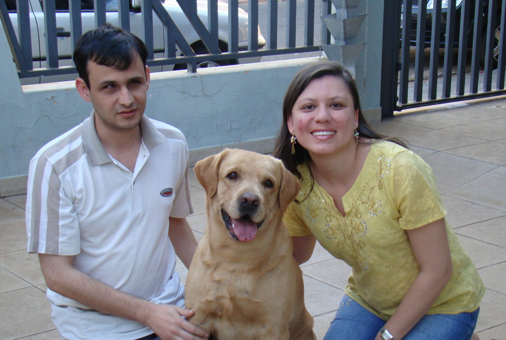

Atividades teocráticas
Esta página nos leva a alguns links teocráticos.
Clique em alguma opção abaixo:
- Curso bíblico gratuito!
- Site Oficial
- Serviço de campo
- Reuniões congregacionais
Se quiser mais informações, escreva para:
filipebmoraes@gmail.com